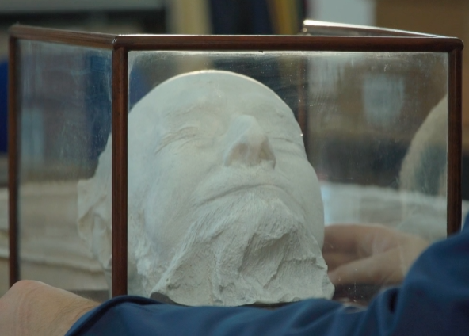

Dyrham Park Urn

Sir Isaac Pitman (4 January 1813 – 22 January 1897), was an
English teacher who developed the most widely used system of
shorthand, known now as Pitman shorthand. He first proposed this
in Stenographic Soundhand in 1837. He was also the vice president
of the Vegetarian Society. Pitman was knighted by Queen Victoria
in 1894.
The first distance education course in the modern
sense was provided by Sir Isaac Pitman in the 1840s, who taught a
system of shorthand by mailing texts transcribed into shorthand on
postcards and receiving transcriptions from his students in return
for correction. The element of student feedback was a crucial
innovation of Pitman’s system. This scheme was made possible by
the introduction of uniform postage rates across England in 1840.
Year: 2017
Item: Death mask of Sir Isaac Pitman (1813-1897)
Collection: Pitman Collection
Catalogue Reference: PITMAN A/131
Description:Object